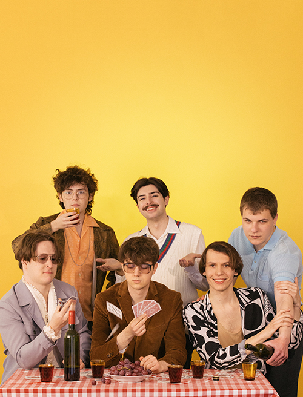

Ez a Carson Coma együttes youtube csatornája
A tagok a kép szerint:
Bóna Zsombor, Fekete Giorgio, Jónás Attila
Kun Bálint, Gal Péter, Héra Barnabás
Ki mit csinál: Bóna Zsombor - gitár Fekete Giorgio - gitár, ének Gaál Péter - ütőhangszerek Héra Barnabás - dob, ének Jónás Attila - basszusgitár Kun Bálint - billentyűs hangszerek
Ha szeretnél róluk többet olvasni itt megteheted.